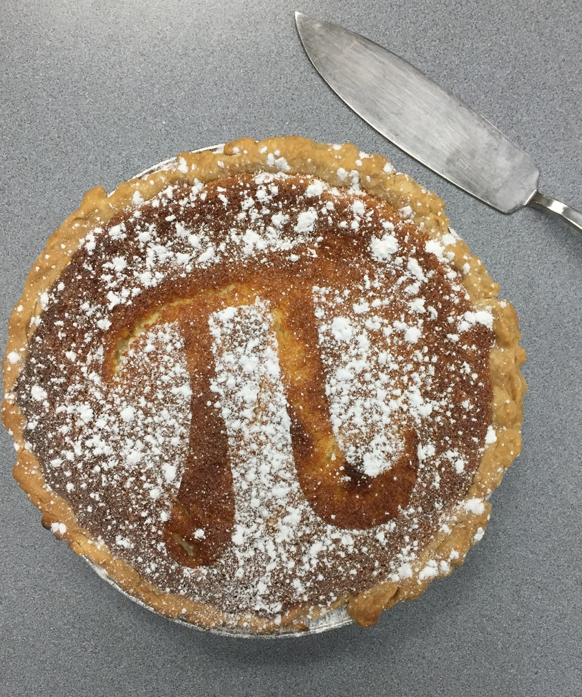

Press & Media

3D Modeling of Plastic Pollution in Lake Erie
RIT's press release for our paper (led by Ph.D. student Juliette Daily) producing the first estimates of plastic pollution in the water column and deposited on the bottom of Lake Erie.

pELAstic Project
Wired discussed the start of our project at the IISD Experimental Lakes Area studying the presence and effects of plastic pollution in lakes.
Plastic Pollution in the Great Lakes
RIT's press release for our paper (with Eric Hittinger at RIT) producing the first estimates of plastic pollution entering and floating in the Great Lakes — approximately 10,000 metric tons per year. A preprint is available and simulations are under Projects.

The Science of Drought
WXXI's monthly science roundtable discussion about the science of drought and the role of climate change.
Sports Statistics
I joined Brian Koberlein's podcast to discuss the use of advanced statistics in ice hockey and other sports.
Math as Science / Theory and Law
Is math a science? What is the difference between a theory and a law? I was on Brian Koberlein's podcast to discuss these questions.
Great Pacific Garbage Patch / Age of the Universe
I was a guest on the podcast One Universe at a Time to discuss plastic pollution in the global ocean and how astronomers determine the age of the universe.

PiRIT Pi Day Pie Contest
RIT news covered the Pi Day Pie Baking contest run by the RIT Math Club (PiRIT), which I advise. They highlighted my pie that year. Full disclosure: neither pie won.
Math at RIT
This video about the applied and computational math program at RIT features me in front of a class as well as discussing student research.